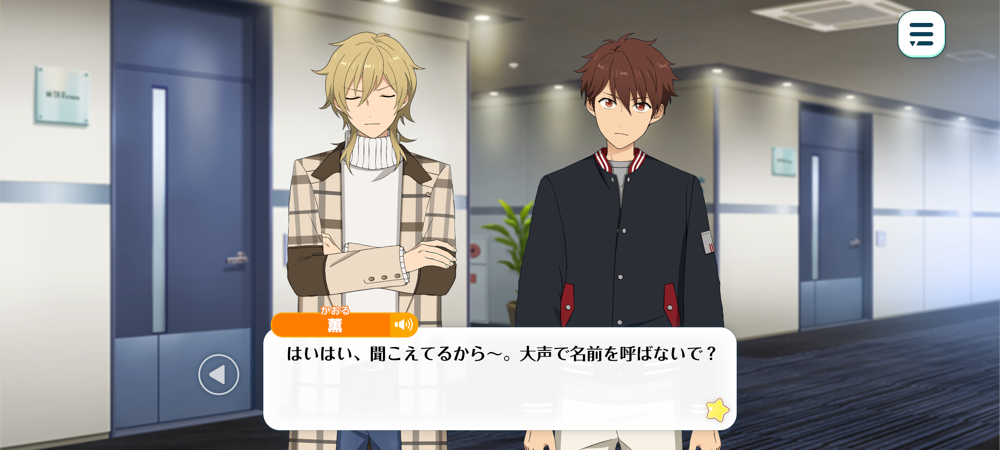
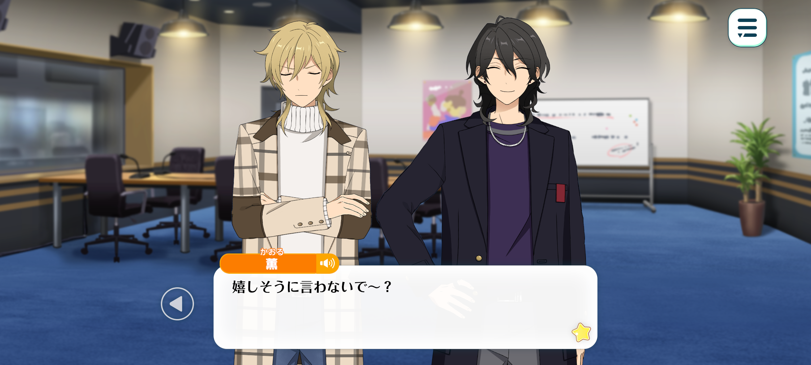

Scout! Scorpio's Venom
Capture Your Heart – Chapter 2



Chiaki: Can you hear me? Heyyy~, Hakaze!
Kaoru: Yes, yes, I can hear you just fine~. No need to shout my name like that.
Hey, Moricchi. And a lovely day to you, Anzu-chan~.
Chiaki: HEEEEY! What a wonderful coincidence, running into each other here! ☆
Kaoru: Ahaha, yeah. What a coincidence...
Um, what were you two talking about? I was actually hoping to have a word with you, but you seemed to be in the middle of a rather serious conversation...
Chiaki: You were just going to leave without saying hello? We're friends, Hakaze! You don't have to be so proper with me!
Actually, Anzu and I were discussing something rather personal.
Kaoru: Something personal?
Chiaki: I'm planning to visit the hospital where I was treated as a child. I was hoping to put on an original hero show to cheer up the children there!
Of course, we don't have much of a budget to work with. I was planning to make do with whatever costumes we could get our hands on and ask the other RYUSEITAI members to help out.
But when I checked with everyone, it turned out they were all already booked on the day I had in mind.
So I was asking Anzu if there was any way we could rearrange things...
Kaoru: Judging by the look on your face, I'm guessing that didn't work out.
If everyone's busy, why not just pick another day? You're all in the same unit, so surely there's a day when everyone's available?
Chiaki: Anzu suggested the same thing. But if possible, I'd really like to keep it on that particular day.
...I got a letter from one of the children being treated there. That's what inspired me to do this in the first place.
Apparently, they're a big fan of heroes. Somehow, they found out that I'd been treated at the same hospital, and decided to write to me.
Heroes never give up! No matter what obstacles stand in their way, they keep fighting!
The letter was full of such determination. The child wrote about how they were going to overcome their illness and become a hero themselves.
But... despite all that courage, they also mentioned that they were about to undergo a major operation. I could practically feel how anxious they were just from reading their words.
That's why I want to visit them before the operation. I want to show them a hero who stands up to evil, and give them someone to cheer for. I want to encourage them and let them know that I'm rooting for them, too!
Thankfully, I've managed to arrange a visit before they're due to go into surgery...
Kaoru: And the rest of your unit are all busy, too?
You can't exactly put on a hero show all by yourself. Are you sure there's no way to change the date?
...Hm? Anzu-chan, what's up? You have an idea?
Chiaki: “Why not ask Hakaze to join us?”
Kaoru: M-me?! Oh, I don't know about that... I've never played a role like that before.
“…Even if you've never done anything like this before, you should be able to manage it. Your performance in that drama left quite an impression, after all…”?
Chiaki: Hakaze...
Kaoru: Moricchi? Why are you looking at me like that?
Chiaki: ...Takamine's costume should fit you perfectly!
I never even considered asking someone from another unit to join us!
Nice idea, Anzu…☆
Kaoru: Uhh... I haven't actually agreed to anything yet, you know...? I'll have to check my schedule first and see if I'm available.
You'll check right away? Thank you, Anzu-chan.
Time: Later, that night
Location: In the radio programme recording booth

Rei: So you went and agreed before thinking it through~♪
Kaoru: Could you at least try not to look so pleased about it~?
Rei: You agreed before thinking it through...
Kaoru: Repeating yourself in a different tone doesn't change anything, you know.
Rei: Well, that's your predicament, not mine. What would you have little ol' me do about it?
Kaoru: It'd be great if you'd just close your mouth and listen to me for a moment.
Rei: How dreadfully dull. What's the point of coming to me for advice if you're only going to tell me to be quiet?
Anyway, I hear you're taking part in a hero show. How very kind of you, Kaoru-kun.
Kaoru: It's not like that. I couldn't exactly turn Anzu-chan down when she asked me. It wouldn't have been right.
With a drama, you can always do another take if something goes wrong. But with a hero show, there's no second chance, is there?
I've never done anything like this before. I'd really rather not mess it up.
Rei: Goodness, what are you on about? Live performances work on exactly the same principle.
Kaoru: But I'm used to doing lives...
Rei: And what of asking someone out on a date? Or those few moments just before a live broadcast begins? Are those not much the same?
Besides, it's hardly going to be some grand theatrical production, is it? Don't take it all so seriously. Just relax and enjoy yourself.
Kaoru: That's easy for you to say. I barely know anything about heroes.
I only just found out that Japanese and American heroes are actually quite different!
And when I played that enthusiastic character, I was basically just copying Moricchi. I really don't know the first thing about heroes.
Rei: Kukukuku... Much like Vampire Shogun, wouldn't you say? ♪
Kaoru: Of course you'd bring up Vampire Shogun...
Rei: And what, pray tell, is that supposed to mean? Vampire Shogun captivated generations of viewers! It's a hero series you ought to be proud of!
Now there's a topic worth discussing! I could give you a whole lecture about it on the radio~♪
We're about to go on air. Are you ready, Kaoru-kun?
Kaoru: Yep! Since radio is all about sound, I'll have to put everything I'm feeling into my voice. Time to change my mindset!
Rei: That's the spirit, Kaoru-kun!
With enthusiasm like that, I'm sure your hero show will be a splendid success...☆
Kaoru: Nngh... Could you stop teasing me when I'm trying to forget about it~?